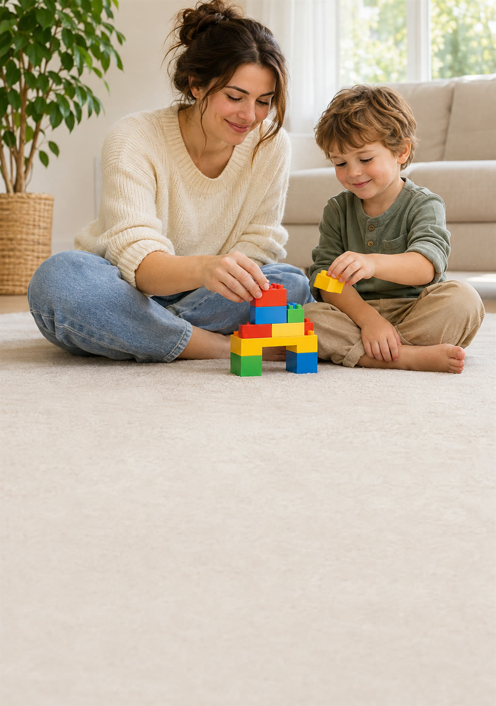

Um guia claro e acolhedor pra reconhecer os sinais, entender a diferença entre os dois, saber o caminho da avaliação e os direitos, e ajudar seu filho desde já em casa e na escola.
Quero o guia dos pais →
Diário de observação e quadro de rotina com imagens.
Instruções curtas, uma de cada vez, e elogio específico.
Cantinho calmo, ajustes sensoriais e timer visual.
Conversa com a escola, lista de forças e rede de apoio.
Autismo e TDAH são condições do neurodesenvolvimento, não falha de criação. Eles se parecem em muitos pontos e podem até vir juntos. Entender as diferenças ajuda você a chegar preparado na consulta e a ajudar seu filho no dia a dia.
O que é autismo, o que é TDAH e os mitos que atrapalham.
Sinais por idade, as 7 diferenças lado a lado e quando são os dois.
Por onde começar, no SUS e no particular, como se preparar e os direitos da criança.
Rotina visível, instruções, casa amiga dos sentidos, crise ou birra, escola e cuidado com quem cuida.
Logo depois do pagamento aprovado, o acesso ao PDF chega no seu e-mail. Dá pra ler no celular, no computador ou imprimir.
Não. Diagnóstico só pode ser feito por profissionais de saúde. O guia te ajuda a observar, entender e chegar preparado na consulta.
Sim. A Parte IV traz estratégias de rotina, comunicação, crises e escola que ajudam no dia a dia.
Sim. Muitas estratégias de rotina, instrução e regulação funcionam também na sala de aula.
Sim, traz um resumo das principais leis brasileiras sobre autismo e TDAH, com a orientação de sempre confirmar nos órgãos oficiais.
Você tem 7 dias de garantia. Pede o reembolso e recebe 100% do valor de volta.